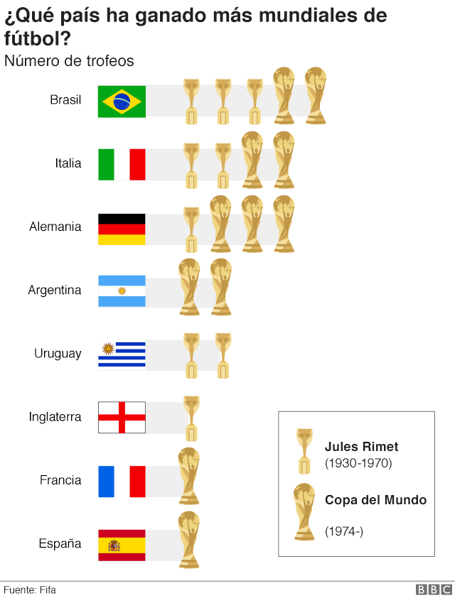
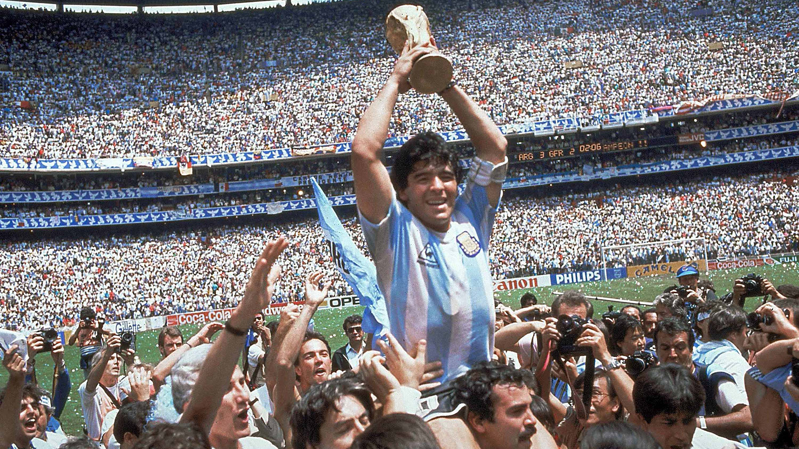
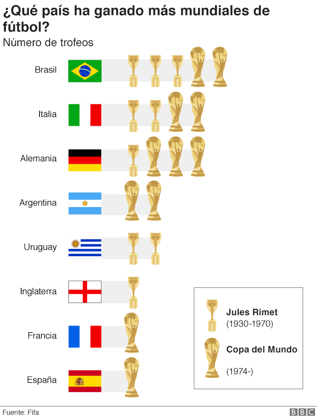
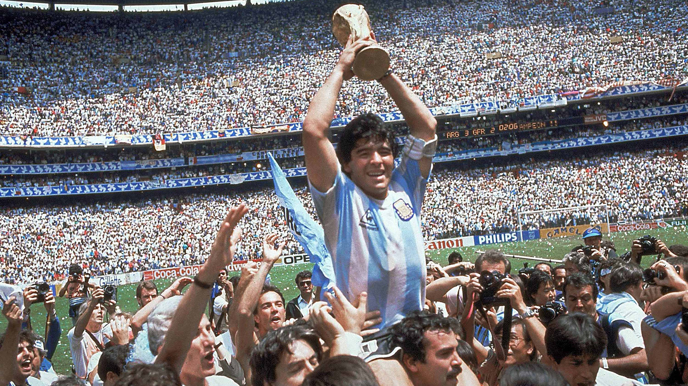
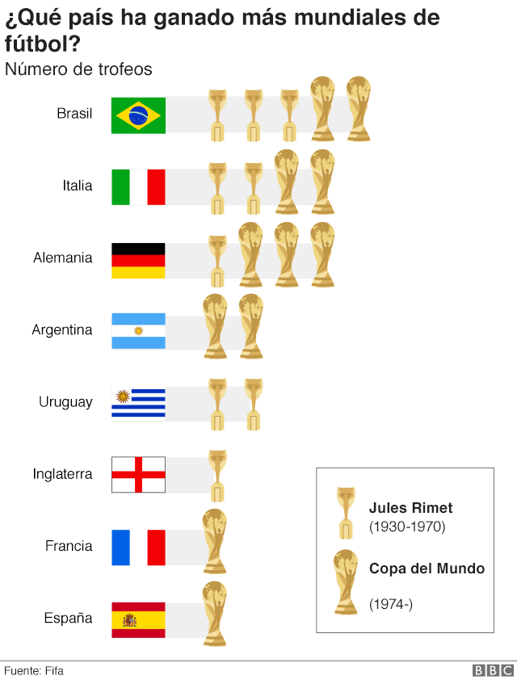
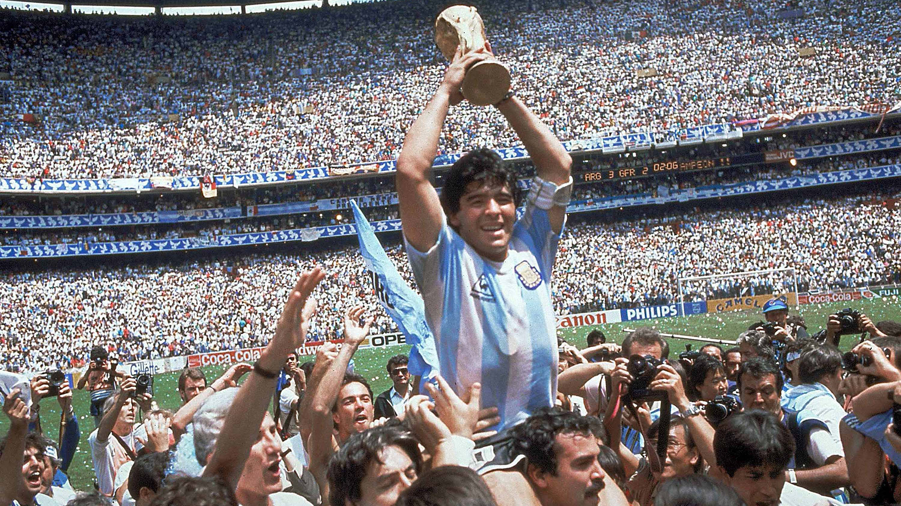

Mundial de Qatar 2022


La Copa Mundial de Fútbol de la FIFA Catar 2022 será la XXII edición de la Copa Mundial de Fútbol masculino organizada por la FIFA. Se desarrollará desde el 20 de noviembre al 18 de diciembre en Catar, que consiguió los derechos de organización el 2 de diciembre de 2010. Será la tercera vez que el torneo se dispute en el continente asiático, tras la edición de 2002, jugada en Corea del Sur y Japón, y la de Rusia 2018 (aunque esta última contaba con una única sede en territorio asiático),y la primera que se celebra en Asia Occidental. También por primera vez, el torneo tiene lugar en Oriente Próximo, en un país árabe y de mayoría musulmana, así como el de menor extensión territorial. Igualmente será el Mundial de mayor tiempo de espera desde 1950 respecto a su edición anterior, ya que se desarrollará entre los meses de noviembre y diciembre de 2022, a diferencia de los meses habituales de junio y julio. De forma paralela será la Copa más corta desde 1978, pues durará solamente veintinueve días a diferencia de los treinta y dos habituales en los últimos campeonatos.